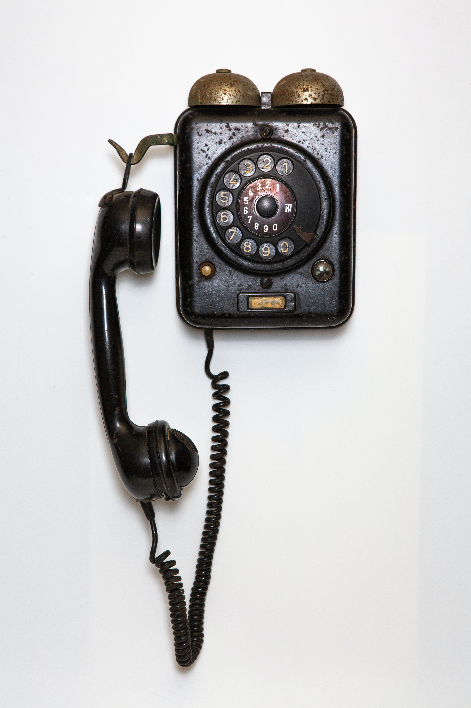
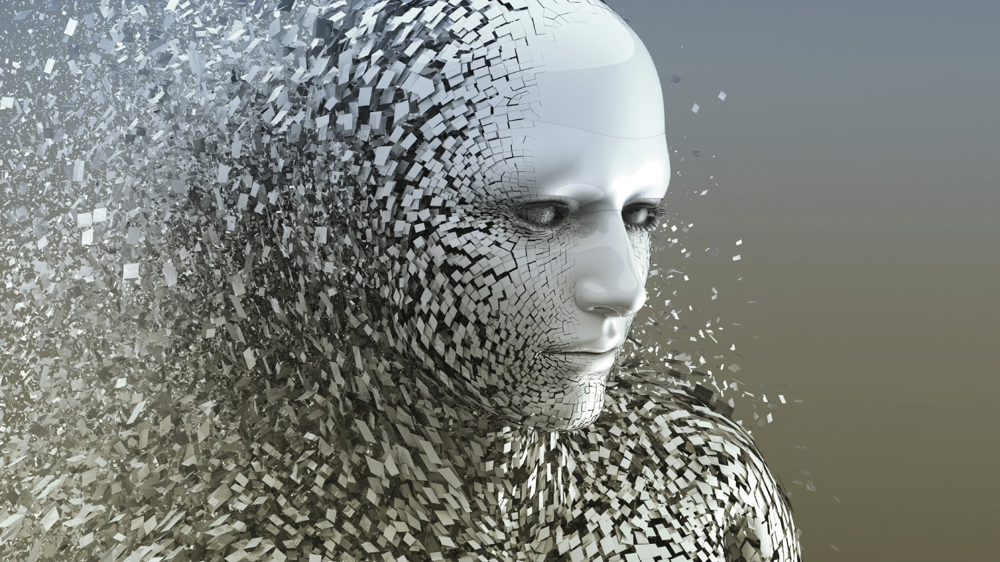

Jam Mekanis
Jam mekanis ditemukan di 1250 sampai 1300 tahun lalu. Pasir dan jam pasir sudah ada selama berabad-abad tetapi jam mekanis pertama kali muncul di Eropa menjelang akhir abad ke-13 dan digunakan di Katedral untuk menandai waktu ketika kebaktian akan dilakukan.
Lampu Listrik
Thomas Edison berhasil membuat bola lampu filamen karbon yang menyala selama 13 jam setengah. Edison mengerjakan sistem distribusi tenaga listrik untuk bisa menerangi rumah dan bisnisnya. Kemudian pada tahun 1882, Edison Electric Illuminating Company membuka pembangkit listrik pertama.
Televisi
Setelah perkembangan radio, transmisi gambar merupakan langkah logis selanjutnya. Televisi pada awalnya menggunakan disk mekanis untuk memindai sebuah gambar. Pada tahun 1922, Farnsworth berusia 16 tahun dan menyusun rencana untuk sistem tersebut, namun pada 1927, ia membuat transmisi televisi elektronik pertama, garis horizontal.
Internet
Perkembangan komputer mulai ada kecanggihan teknologi lain seperti tenaga nuklir, transistor, penerbangan luar angkasa, komputer pribadi, dan akhirnya di tahun 1974 internet muncul. Vinton Cerf dan Robert Kahn menghasilkan TCP/IP yang menjelaskan data untuk dipecah menjadi bagian lebih kecil.
CRISPR
Jennifer Doudna merupakan ahli kimia Amerika dan ahli mikrobiologi Prancis, Emmanuel Carpentier yang berhasil mengembangkan CRISPR-CAS9. Alat tersebut merupakan metode untuk mengedit gen dan membuat perubahan pada urutan DNA.
Sejarah Perkembangan Teknologi
Fotografi
Pada awal 1820, Nicéphore Niépce menjadi tertarik menggunakan sebuah larutan peka cahaya untuk membuat salinan litografi ke kaca, seng, dan akhirnya untuk plat timah. Kemudian muncul ide bagus untuk menggunakan salinan gambar di kamera obscura.
Telegraph
Samuel Morse adalah pelukis sukses yang tertarik terhadap telegraf listrik di tahun 1830-an. Kemudian di tahun 1894, dia mengirim pesan pertama melalui jalur telegraf jarak jauh.
Telepon
Telepon ditemukan pada 1876 ketika Alexander Graham Bell meminta asistennya untuk datang padanya.

Komputer
Pada tahun 1937, matematikawan dan fisikawan Iowa State John Atanasoff merancang sebuah komputer digital elektronik pertama. Tersebut menggunakan angka biner dan datanya disimpan melalui kapasitor. Kemudian pada tahun 1939, muridnya Clifford Berry mulai membangun komputer Atanasoff - Berry

Kecerdasan Buatan
Kecanggihan teknologi saat ini ada di tahap kecerdasan buatan yang diumumkan pada tahun 2017. Balik program kecerdasan buatan Alphago ternyata mereka menjadi pemain Go terbaik dunia. Aku adalah permainan dengan aturan yang sangat sederhana tetapi memiliki banyak kemungkinan posisi.